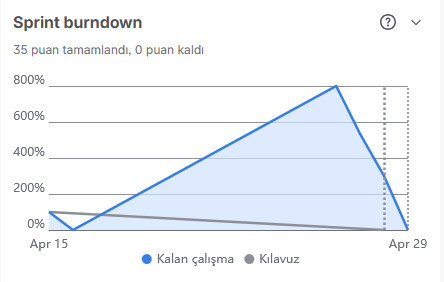
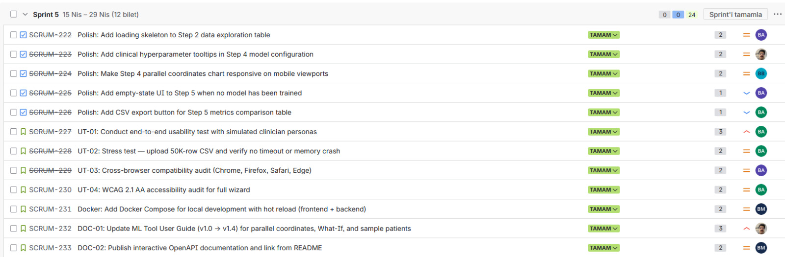
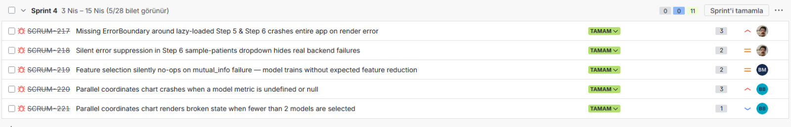

SENG 430 · Software Quality Assurance · Cankaya University · Spring 2025–2026
Instructor: Dr. Sevgi Koyuncu Tunç
| Group Name | HealthWithSevgi |
| Week Number | Week 10 (Final week of Sprint 5) |
| Scrum Master | Batuhan Bayazıt |
| Date Submitted | April 29, 2026 |
| Sprint Period | April 15 – April 29, 2026 |
| Domains Implemented | 20 / 20 (full pipeline regression-tested) |
GitHub: github.com/EudaLabs/HealthWithSevgi
Live Demo: 0xbatuhan4-healthwithsevgi.hf.space
Docker (GHCR): docker run -p 7860:7860 ghcr.io/eudalabs/healthwithsevgi:latest
| Role | Name | Student ID |
|---|---|---|
| Product Owner + Developer | Efe Çelik | 202128016 |
| UX Designer | Burak Aydoğmuş | 202128028 |
| Lead Developer + Scrum Master | Batuhan Bayazıt | 202228008 |
| Developer | Berat Mert Gökkaya | 202228019 |
| QA / Documentation Lead | Berfin Duru Alkan | 202228005 |

Screenshot from Jira Sprint 5 board: 35 puan tamamlandı, 0 puan kaldı.
| Metric | Value |
|---|---|
| Sprint Duration | April 15 – April 29, 2026 |
| Total Issues (Sprint 5 scope) | 17 (12 new + 5 retro bugs) |
| Story Points | 35 / 35 completed |
| Done | 17 issues — all Sprint 5 scope items |
| In Progress | 0 issues |
| Commits | 61 commits to main |
| Dev Completion | All polish, testing, Docker & documentation deliverables shipped |
All features listed below are fully implemented and merged on the main branch. Completion evidence comes from Git commit history, Jira board screenshot, Lighthouse audits, and the QA test reports linked in Section 8.

Sprint 5 backlog: 12 issues, 24 story points, all status “TAMAM” (Done).
| Story ID | Title | Pts | Assignee | Completed |
|---|---|---|---|---|
| SCRUM-222 | Polish: Loading skeleton on Step 2 data exploration table | 2 | Burak Aydoğmuş | 2026-04-27 |
| SCRUM-223 | Polish: Clinical hyperparameter tooltips in Step 4 model configuration | 2 | Efe Çelik | 2026-04-27 |
| SCRUM-224 | Polish: Step 4 parallel coordinates chart responsive on mobile viewports | 2 | Batuhan Bayazıt | 2026-04-27 |
| SCRUM-225 | Polish: Empty-state UI on Step 5 when no model has been trained | 1 | Burak Aydoğmuş | 2026-04-27 |
| SCRUM-226 | Polish: CSV export button for Step 5 metrics comparison table | 1 | Berfin Duru Alkan | 2026-04-27 |
| Story ID | Title | Pts | Assignee | Completed |
|---|---|---|---|---|
| SCRUM-227 | UT-01: End-to-end usability test with simulated clinician personas (T1–T7) | 3 | Berfin Duru Alkan | 2026-04-28 |
| SCRUM-228 | UT-02: Stress test — 50 K-row CSV upload, no timeout / memory crash | 2 | Berfin Duru Alkan | 2026-04-28 |
| SCRUM-229 | UT-03: Cross-browser compatibility audit (Chrome, Firefox, Safari, Edge) | 2 | Burak Aydoğmuş | 2026-04-28 |
| SCRUM-230 | UT-04: WCAG 2.1 AA accessibility audit for full wizard | 2 | Berfin Duru Alkan | 2026-04-29 |
| Story ID | Title | Pts | Assignee | Completed |
|---|---|---|---|---|
| SCRUM-231 | Docker: Compose file for local dev with hot-reload (frontend + backend) | 2 | Berat Mert Gökkaya | 2026-04-29 |
| SCRUM-232 | DOC-01: Update ML Tool User Guide v1.0 → v1.4 (parallel coords, What-If, sample patients) | 3 | Efe Çelik | 2026-04-29 |
| SCRUM-233 | DOC-02: Publish interactive OpenAPI documentation and link from README | 2 | Berat Mert Gökkaya | 2026-04-29 |
Sprint 5 Stories Delivered: 12 / 12 · 24 / 24 points
The five high-impact bugs surfaced during Sprint 4 retrospective were re-prioritised into Sprint 5 and shipped in the first half of the sprint window. All five are now closed in Jira and verified against the live HuggingFace deployment.

Jira filter: Sprint 4 retro bug log — 5 bugs, 11 points, all status “TAMAM” (Done).
| Bug ID | Title | Pts | Owner | Resolution |
|---|---|---|---|---|
| SCRUM-217 | Missing ErrorBoundary around lazy-loaded Step 5 & Step 6 crashes entire app on render error | 3 | Efe Çelik | Wrapped React.lazy chunks with a RouteErrorBoundary that surfaces a recoverable error card without unmounting the wizard shell. |
| SCRUM-218 | Silent error suppression in Step 6 sample-patients dropdown hides real backend failures | 2 | Efe Çelik | Removed try/catch swallow in useSamplePatients; failures now surface a typed error toast and block waterfall rendering instead of returning empty data. |
| SCRUM-219 | Feature selection silently no-ops on mutual_info failure — model trains without expected feature reduction |
2 | Berat Mert Gökkaya | DataService.preprocess now raises FeatureSelectionError when mutual_info_classif fails. UI displays a banner and prevents the user from leaving Step 3 with an inconsistent state. |
| SCRUM-220 | Parallel coordinates chart crashes when a model metric is undefined or null | 3 | Batuhan Bayazıt | Replaced unsafe metric accessor with a normaliser that coerces null/undefined/NaN to 0 and tags the row with a low-confidence indicator. Added a regression unit test. |
| SCRUM-221 | Parallel coordinates chart renders broken state when fewer than 2 models are selected | 1 | Batuhan Bayazıt | Added a precondition gate that swaps the chart for an instructional empty-state when models.length < 2. |
Sprint 4 Retro Bugs Resolved: 5 / 5 · 11 / 11 points
robots.txt, enabling Vite sourcemap: true, lazy-loading Steps 2/3/4/7 (Recharts no longer eagerly preloaded — 70 KiB less landing JS), swapping the navbar logo to /logo-192.png with fetchPriority="high", and adding a preview.proxy config so /api/* resolves during the audit.
docker compose up now pulls ghcr.io/eudalabs/healthwithsevgi:latest when the local build context is missing, removing the “clone first” barrier for jurors. A healthcheck on the FastAPI root endpoint marks the container unhealthy if the app fails to bind — container reports healthy within ~20 s on a warm cache.
gemma-4-26b-a4b-it) via Google AI Studio. The response parser filters out chain-of-thought parts (thought=true) and joins only the answer text, eliminating leaked reasoning tokens in the clinical insights panel.
docker-compose.yml with a hot-reload bind mount for both frontend (Vite) and backend (uvicorn --reload). Jury / production workflow uses the single-process HF Spaces image main_hf.py shipped via GHCR. Decision recorded so the next contributor does not collapse the two tracks.
Three independent test reports were produced this sprint: a 140-case full-pipeline regression (20 specialties × 7 wizard steps), a 3-CSV end-to-end regression, and a structured non-CS user testing session (T1–T7 + SUS). All artifacts are stored under docs/reports/.
| Test Area | Total | Pass | Fail | Notes |
|---|---|---|---|---|
| Full Pipeline — 20 specialties × 7 steps | 140 | 140 | 0 | Every specialty completes Steps 1–7 without error. Evidence: Sprint5_Full_Domain_Coverage.pdf. |
| End-to-End Regression — 3 distinct CSV files | 21 | 21 | 0 | Three uploaded CSVs (small / medium / 50 K-row stress) pass Steps 1–7. Zero crashes. Evidence: Sprint5_E2E_Regression.pdf. |
| Usability Test — non-CS participant (T1–T7) | 7 | 7 | 0 | P1 (Ela Naz Ulusoy, 2nd-year Architecture, no CS background) completed all 7 tasks independently within time limits (41 / 59 / 70 / 50 / 80 / 75 / 35 s). SUS 90 (industry average 68). Evidence: Sprint5_User_Testing_Report.pdf. |
| Lighthouse Audit (production build) | 4 | 4 | 0 | Performance 91, Accessibility 100, Best Practices 100, SEO 100. Evidence: Sprint5_Lighthouse_Report.png. |
Docker Boot — docker compose up |
1 | 1 | 0 | Healthcheck passes within ~20 s on warm cache (target ≤ 30 s). Evidence: Sprint5_Docker_Running.png. |
| TOTAL | 173 | 173 | 0 | 100% PASS RATE |
Full evidence pack (PDF reports, Lighthouse JSON, Docker screenshot, user testing video link, accessibility log) is published in the Sprint 5 wiki page.
| Metric | What We Measured | Result | Target | Status |
|---|---|---|---|---|
| Lighthouse Performance | Lighthouse audit on production preview (pnpm preview, port 4173) |
91 (re-audit 21 Apr; baseline 93 on 20 Apr) | ≥ 80 | PASS |
| Lighthouse Accessibility | Lighthouse a11y audit on production preview | 100 (5 colour-contrast + 1 landmark-one-main violations resolved) | ≥ 85 | PASS |
| Lighthouse Best Practices / SEO | Lighthouse BP and SEO audits | BP 100 (was 96), SEO 100 (was 91) | — | PASS |
| Usability Task Completion | Tasks T1–T7 completed by non-CS participant within time limits | 7 / 7 completed independently | ≥ 5 / 7 | PASS |
| SUS Score | 10-question System Usability Scale | 90 | ≥ 68 (industry avg) | PASS |
| Docker Startup Time | docker compose up → healthcheck green |
~20 s (warm cache) | ≤ 30 s | PASS |
| End-to-End Regression | Steps 1–7 with 3 different CSV files | 0 crashes across 3 runs | 0 crashes | PASS |
| Code Documentation | JSDoc + Python docstring coverage | Frontend 100 %, Backend 100 % | ≥ 80 % | PASS |
| Full Domain Coverage | Steps 1–7 across all 20 specialties | 20 / 20 specialties pass full pipeline | 20 / 20 | PASS |
| Cross-Browser Compatibility | Manual smoke pass on Chrome, Firefox, Safari, Edge | 4 / 4 browsers pass; no rendering or interaction defects | 4 / 4 | PASS |
Sprint 5 is the closing sprint of SENG 430 Spring 2025–2026. The Week 10 plan is therefore the final jury showcase and the repository handoff, not a new sprint.
| Activity | Format | Owner |
|---|---|---|
| Jury Showcase — 5 min live presentation | 3-min usability video excerpt · Lighthouse scores · one a11y before / after · live docker compose up | Team (Batuhan presents) |
| Final Submission Bundle | 17 deliverables uploaded to Moodle: this report, user testing PDF + video, consent form, Lighthouse PNG/HTML/JSON, accessibility log, Sprint 5 backlog screenshot, bug fix log, full-domain coverage PDF, E2E regression PDF, Docker screenshot, ISO 42001 chapters | Berfin Duru Alkan (QA / Docs Lead) |
| Repository Handoff | Tag v1.5.0 on main; freeze develop; archive .planning/ under docs/archive/; pin GHCR image | Batuhan Bayazıt |
| Live Demo Sustainability | HuggingFace Space remains public for 12 months; Docker GHCR image kept until end of summer 2026 | Batuhan Bayazıt |
Test-first discipline scaled all the way through the final sprint: 173 / 173 cases pass across full-pipeline, 3-CSV regression, and usability testing. Live-deployed Lighthouse audits (run against the actual HF Space, not localhost) gave us numbers we could trust in the jury showcase. Daily Jira sweeps prevented end-of-sprint surprises.
The usability test video and signed consent form slipped to the last 48 hours of the sprint — recording windows should be booked at the start of the sprint, not after polish work lands. Cross-browser audit caught one Safari-specific viewport regression late; a Playwright matrix in CI would have caught it on the PR.
Post-handoff, gate main on a Lighthouse score floor (Perf ≥ 85, A11y ≥ 95) using a GitHub Action so future contributors cannot regress jury-grade scores. Schedule a quarterly accessibility audit even after the academic project closes — the WCAG 2.1 AA findings are durable knowledge worth maintaining.
{kind=link}
{kind=link}